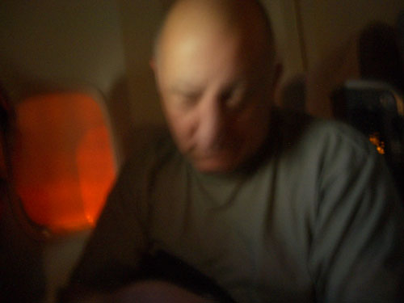
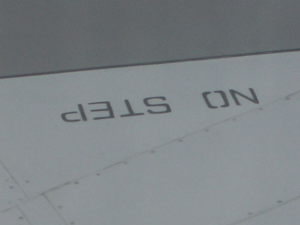
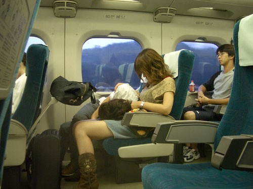
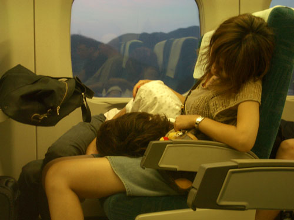
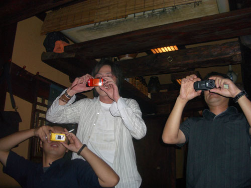

| < | > |
| Remembering a time recently passed | [2004-10-04 07:43] |
In order to be able to sleep on the plane, we decided to fly JAL because they do a non-stop flight London-Osaka in the evening, leaving 18:55 on Saturday, arriving 14:55 on Sunday. It's a long trip, but always exciting (for me at least) to be going somewhere else. Out across the globe where the unknown and the uncertain lurk in wait to greet you. There is always that moment in the mind when the wheels leave the tarmac and you know that limbo has begun. Over and over Hermione scrambled about with her two proto-boyfriends. Such a good recipe for an endless saga, a girl's choice between the two halves of man, and larded all round with English character actors. I'm sure condensed film-Potter is much better that wading through the books, but never having read them I can't say.  Meanwhile, someone had taken a liberal supply slumber potion, and was mumbling incomprehensibly and refusing to lie back and sleep. "No, no, I'm ah ... zzzzzz."  Eventually daylight appeared and we woke up in Japanese time. Scampering back and forth to the toilet. Peeking out the emergency exit window looking for Siberian wastes. Trying to find something to photograph. Somehow we were suddenly there. Osaka wheeled into view and we were landed and on the train to Hiroshima. I'd never really travelled with my little camera before, and was all keyed up with the idea that I could just photograph everything. I had two 256 mb cards with me, that would give me something just under 200 photos. For someone who used to style himself "The man with no camera" that was a lot. In retrospect I should probably have set the pixel size of the images much smaller and taken more, after all they're unlikely to end up anywhere but here, and I always shrink them before using them. But the habits of a professional artist die hard. One always has an eye on the grand use - the bigger the better. Or as Francis Picabia put it, "Are we not betrayed by importance?" Anyway, the first thing that caught my eye was this pair of lovers on the train.  As we shinkansen-ed on through the endless urban sprawl I stealthfully repositioned my little mechanical eye and nibbled at the catatonic Asian romance.  Eventually we glided into Hiroshima station and found our friend Yukiko, who had an empty flat we could stay in for a couple of days. This was our "prepare for jetlag" strategy. Joao had been in Hiroshima before, and so there were other friends to meet, in a tiny hole in the wall bar down an alleyway in the basement of a bland building, as these thing are in Japan (and probably all over Asia) where the tyranny of main street street level is less emphatic. By the end of the evening everyone was drunk.  |
|